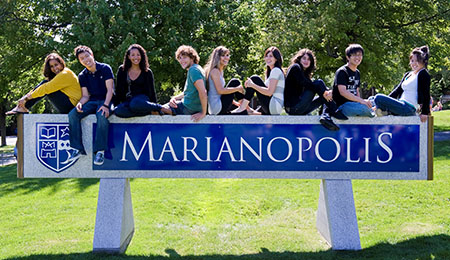

Musique on/off
Marianopolis College est un cégep privé de langue anglaise à Westmount, Québec, Canada. Collège Marianopolis est la seule école de ce type offrant des études pré-universitaires en anglais. Depuis plus de 100 ans, Marianopolis a préparé des étudiants motivés pour les meilleures universités du monde.
Reconnu comme étant un des meilleurs établissements d’études préuniversitaires du Québec, Marianopolis peut être fier de ses 2,000 étudiants venant de plus de 175 écoles secondaires publiques et privées, françaises et anglaises, situées au Québec et en dehors du Québec.
Depuis sa fondation en 1908, Marianopolis a supporté les élèves tant au plan scolaire qu’au plan parascolaire. Ce collège offre aux étudiants plus de clubs que tous les autres établissements de ce type et de plus, Marianopolis est le seul cégep à offrir aux étudiants une période de pause commune, le “Activity Period”. Cette pause a pour but de permettre aux étudiants de s’épanouir en dehors du cadre de l’école et de rencontrer diverses personnes connues mondialement telles que Vince Guzzo.
Les étudiants de Marianopolis ont aussi l’opportunité de participer dans une grande variété d’activités parascolaires allant du ArtsFest qui dure une semaine complète aux Arts Trip, en passant par des compétitions de science, des maths et de la robotique.
Pourquoi un élève devrait s'appliquer à Marianopolis? La réponse est simple: Marianopolis est l'endroit idéal pour des jeunes motivés à réaliser, grandir et réussir. En tant que seule langue anglaise collège privé du Québec, Marianopolis a été positionnée de façon unique pour plus d'un siècle d'offrir soutien sans précédent, des ressources et des services aux étudiants dans la salle de classe et au-delà.